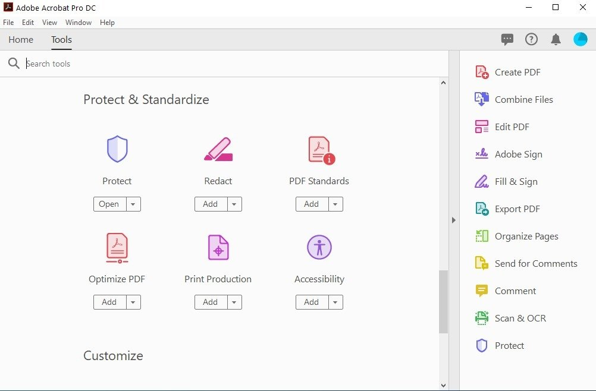
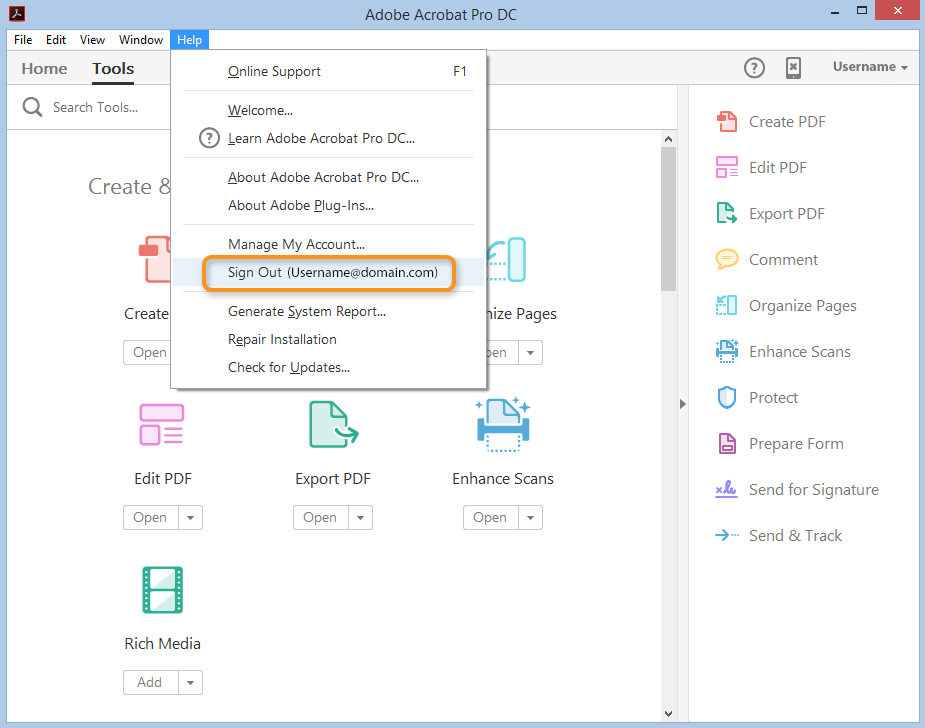
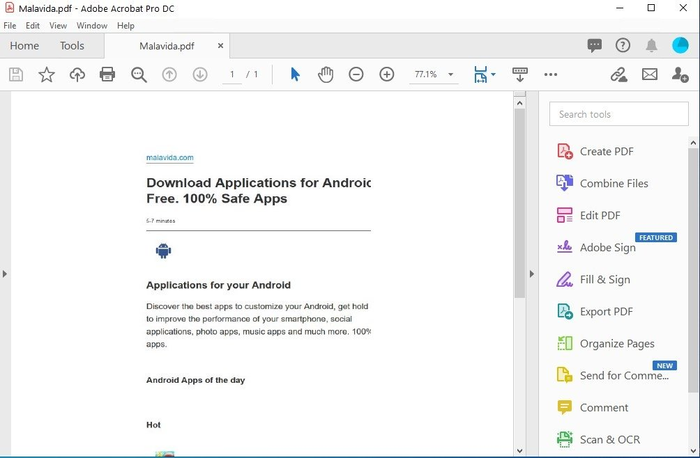

ADOBE ACROBAT
| |
ADOBE ACROBAT |
Apresentação
| Adobe Acrobat é um software desenvolvido pela Adobe, que permite a conversão de documentos de diversos formatos em um arquivo de formato PDF (Portable Document Format). O Software Adobe Acrobat proporciona a capacidade de converter o documento de maneira fiel ao original independente do seu conteúdo. Para visualizar estes tipos de documentos, a Adobe disponibiliza gratuitamente o software para leitura (Adobe Reader) independente do sistema operacional e dispositivo (hardware). |
 |
|  | O Software Acrobat Pro DC foi aprimorado para
tornar ainda mais avançada a nossa relação com um importante tipo de arquivo: o PDF. Agora, a
ferramenta está conectada ao compartilhamento da nuvem da Adobe e pode ser usada em qualquer
dispositivo (Windows, Mac, iOS e Android). |
| Um importante diferencial do Acrobat Pro DC é
a possibilidade de compartilhar documentos com outras pessoas por e-mail ou torná-los públicos
sem a necessidade de utilizar outros programas. Os arquivos enviados podem ser editados e revisados
em tempo real. |
 |
Para saber mais acesse: https://l3software.com.br/blog/softwares/acrobat-pro-dc-ferramenta-otimiza-rotina-de-quem-trabalha-com-pdfs/
| |
|
|